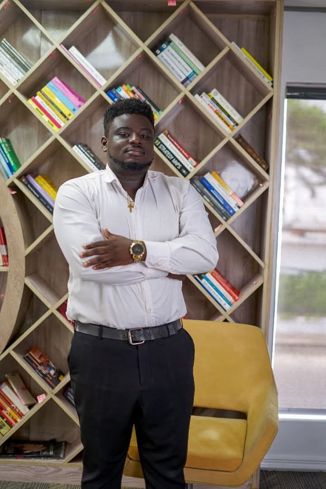

Hi, I'm Hassan Ore-Oluwa Joseph
Welcome to my student portfolio.
I'm a Computer Science student with a strong interest in cybersecurity, software development, computer technology and entrepreneurship. This website showcases my academic journey, technical skills, projects and professional interests.

What I focus on
Cybersecurity
Security fundamentals and ethical hacking.
Software Development
Building practical, useful web solutions.
IT Support
Computer setup, repairs and troubleshooting.
Entrepreneurship
Building technology-driven services.
Brief biography
I am a Computer Science student passionate about using technology to solve real-world problems. My interests cover cybersecurity, web development, computer systems, software solutions and technical support. I also enjoy learning new technologies and developing practical solutions that improve the way people work and stay safe.
Alongside my academic studies, I am building practical experience through cybersecurity training, technology projects, computer support and entrepreneurship. My long-term goal is to develop strong technical expertise and build technology-driven solutions that create meaningful value.